A Mac app for photographers
Your photos, framed and quietly moving.
AnimGram turns your photos into white-framed Instagram posts that loop, and into Reels that follow the beat. Made on your Mac. Paid for once.
A$9 for the first 50 buyers, then A$19 once. macOS 13.3 or later, Apple silicon and Intel.
- Works offlineNothing leaves your Mac
- No account, no trackingNot in the app, not on this site
- Pay onceAll 1.x updates, no subscription
In the feed
A feed of stills. Then one that quietly moves.
Our opinion, not a statistic: motion catches the eye. We make no promises about reach, because nobody honestly can. What we can promise is a post that looks like you made it on purpose.
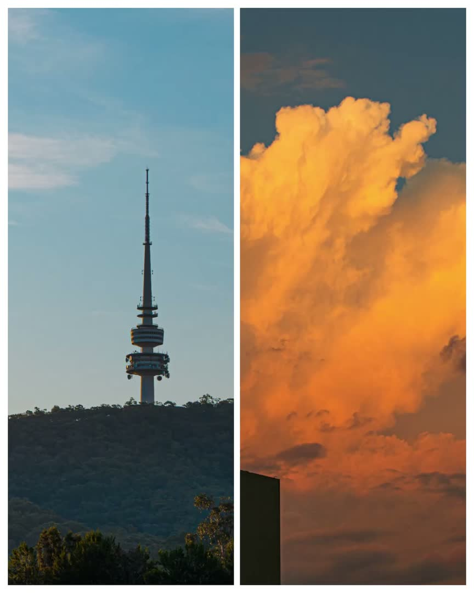
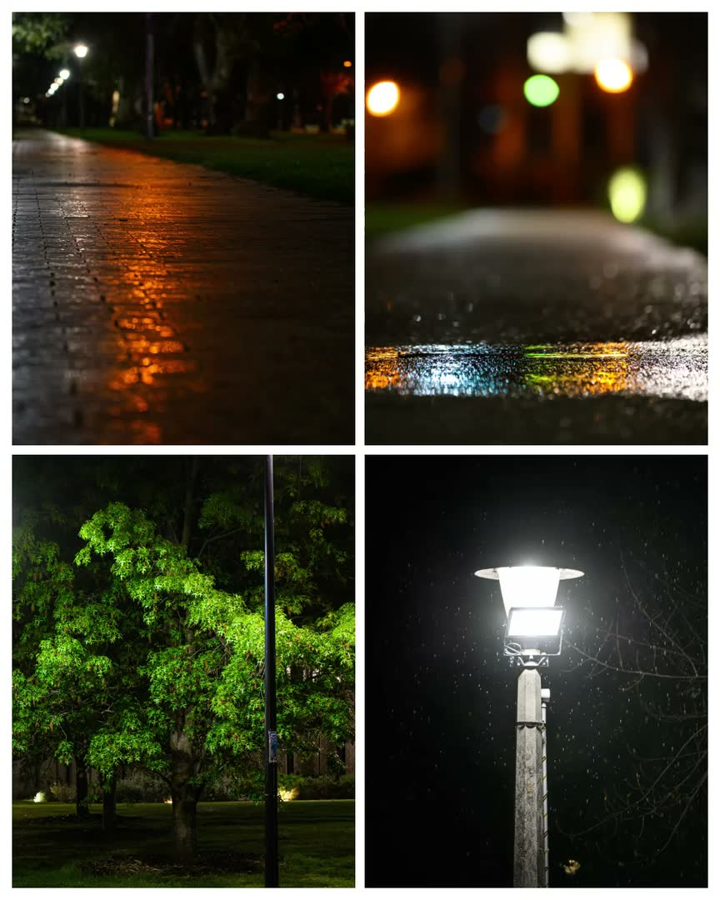
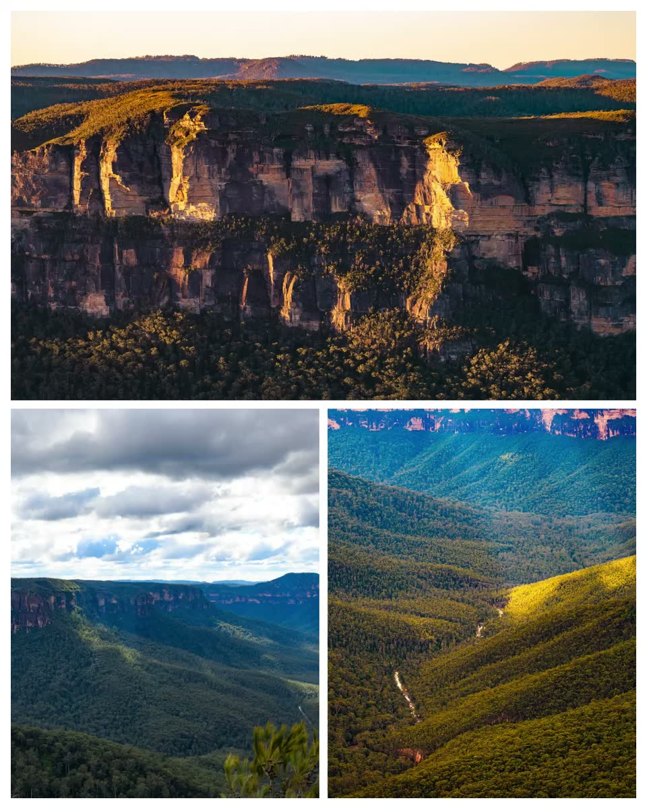
Generic phone mock-ups. The loops are real exports from AnimGram.
Why pay for this
Free tools are good. This is for a narrower person.
Instagram's own Edits app is free, and Canva has a free tier. If a quick phone collage already does the job, keep using it. People choose AnimGram when they want these three things.
- 01
A look, not a template library
Thin white gutters, square corners, one to eight photos. The layouts and the motion are tuned for photographs shown as photographs, not for flyers or promo graphics.
- 02
Loops that actually loop
Every motion style is built so the last frame meets the first. The post runs all day without a visible seam, and its first frame is exactly the layout you built.
- 03
Yours to keep
Full-resolution files on your desktop, MP4s and stills you own, no account and no subscription. Your photos are never uploaded anywhere.
A$9 for the first 50 buyers.
Canva Pro, annual price on canva.com/en_au/pricing, checked 16 November 2026.
Canva does far more than AnimGram, and its free tier is generous. The point is the billing: if you only need beautiful photo posts and loops, you shouldn't have to rent them forever.
What it isn't
- Not a video editor.It builds posts and films from your photos. There is no multitrack timeline of footage.
- Not a phone app.It runs on a Mac, for people who already edit photos on a desktop.
- Not a scheduler.It makes the file. You upload it to Instagram yourself.
In motion
Loops that actually loop.
Thirty motion styles: photos that glide, drift and push in, frames that slide, flex and shuffle, and a few that hit on the beat. Each is built so the last frame meets the first.
Look at the seam.
Five frames from one loop. After the last frame comes the first, and nothing jumps. That is the whole trick, and it is built into every style, so you never have to engineer it yourself.
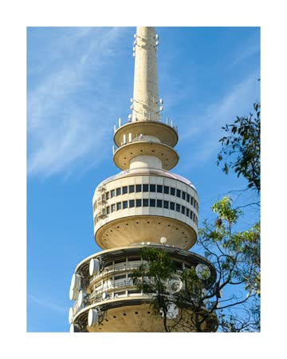
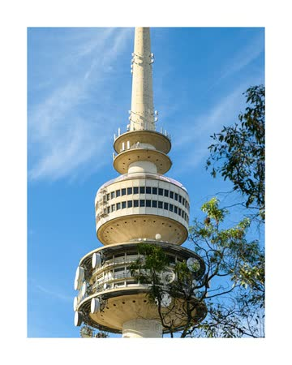
Photo moves
- Glide
- Drift
- Lift
- Breathe
- Pull back
- Ken Burns
- Push in
- Sway
- Wave
- Elastic
- Orbit
- Weave
- Parallax
- Counterpoint
- Handheld
Frame moves
- Slide
- Cascade
- Flex
- Bounce
- Pendulum
- Domino
- Float
- Magnet
- Shuffle
- Deal
- Zoom through
- Unfold
Beat moves
- Pulse
- Kick
- Metronome
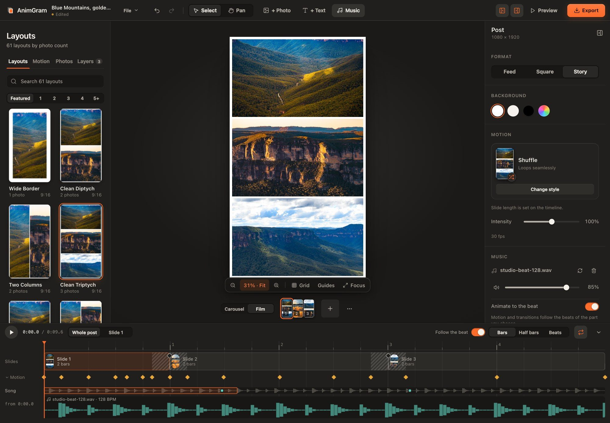
The editor
A look, not a template library.
Pick a layout, drop in your photos, and they sit in clean white frames with exact gutters. One timeline runs along the bottom for the whole post.
- 61 layouts for one to eight photos
- Three formats: Feed 4:5, Square, Story and Reel 9:16
- Reposition and zoom each photo inside its frame
- Looks when you want them: Natural, Warm Film, Crisp Cool, Moody B&W
- One timeline for slides, motion and song, with a Whole post / Slide switch to zoom into a single slide
- 01
Pick a layout
From one to eight photos, with thin white gutters and square corners.
- 02
Drop your photos
Add several at once. They fill the frames in order; swap and recompose as you like.
- 03
Choose a motion
Every style card plays live on your own photos. Pick one, then set the intensity.
- 04
Export
MP4 for the moving post, stills for the grid, at the sizes Instagram uses.
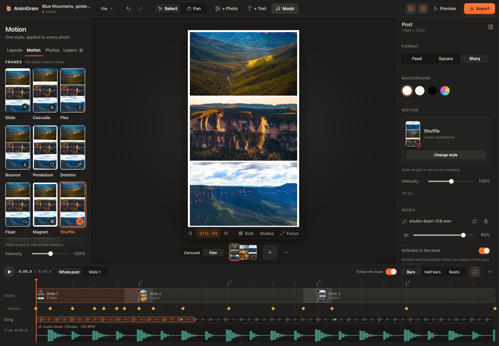
Choose a style, hear nothing, see everything.
Every card animates live on your own photos before you commit, grouped as Photo, Frames and Beat. Beginners never touch a keyframe: pick a style, set the intensity, and the timeline's Motion row shows where each move lands.
Film mode
From a post to a Reel.
Line up slides and they play one after another, with transitions between them, as a single MP4 for Reels and Stories. Every slide keeps its own layout and its own motion. A diamond on the timeline marks each transition; click it and the tiles play your real slides, A into B.
- Cut
- Fade
- Dip to white
- Slide
- Push
- Zoom
- Morph
- Whip
Morph, in eleven ways
- Morph
- Spring
- Zoom
- Flip
- Iris
- Slide
- Stack
- Swap
- Ripple
- Split
- Blur
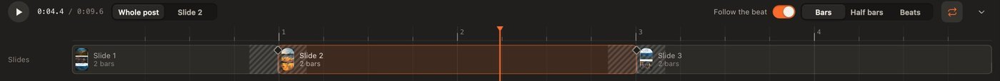
Left: a four-slide Film, 1080 × 1920, made in AnimGram. It has no music; the site never plays audio. Above: the timeline's Slides row, from a three-slide post.
Music
Your song. Motion that follows.
Add a song you have the rights to and drag the Song row on the timeline to choose the part you want. AnimGram never moves the song: with Animate to the beat on, it re-times the animation to that part's beat instead.
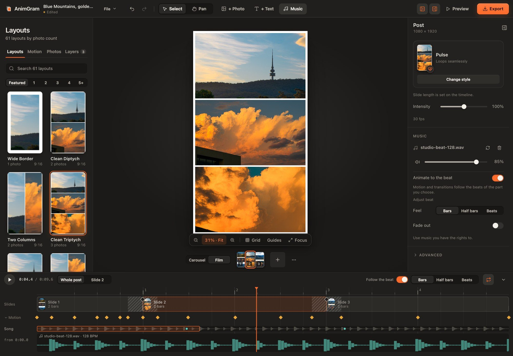
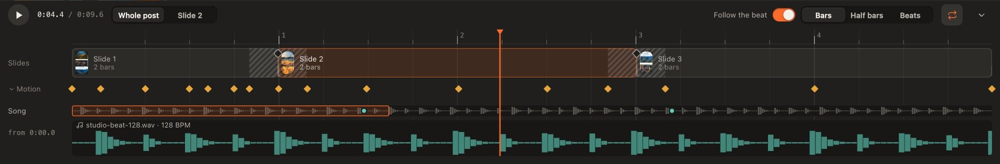
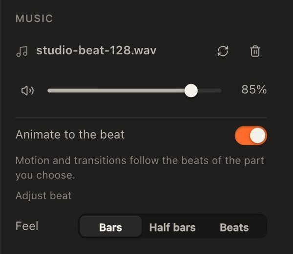
- 01
You pick the part of the song
Drag the Song row on the timeline, or the small window on the minimap above it, to choose exactly what plays. It snaps to the beat. A few suggested parts are marked with dots, and they only move the window if you click one.
- 02
Motion lands on the beat
Animate to the beat makes motion land on the beat, keeps loops to whole bars and puts Film transitions on downbeats, to the frame. Feel is Bars, Half bars or Beats. Move the song and the animation re-fits, in one undo step. If the detected beat looks wrong, Adjust beat lets you halve it, double it or shift the downbeat.
- 03
Sound and picture stay together
The exported MP4 carries AAC audio, with sound and picture frame-accurate.
AnimGram doesn't supply music: bring a song you have the rights to, and check the licensing rules of wherever you post it. The screenshots here use a beat generated for this page, never a copyrighted track.
Export
Files you keep.
No watermark, no cloud, no expiry. They are ordinary files on your Mac.
- Video
- MP4 (H.264)30 or 60 frames per second
- Animated
- GIF
- Stills
- PNG and JPG
- Sizes
- Feed 1080 × 1350Square 1080 × 1080 · Story and Reel 1080 × 1920
- Carousels
- Every slide, exported together
- Films
- One MP4, with AAC audio if you add a song
Price
Pay once. Keep it.
A$9 for the first 50 buyers, then A$19. One payment, every 1.x update, no subscription, and a 14-day refund if it is not for you.
It is early access. The core workflow is solid, and you should still expect rough edges and the odd bug. The founding price is for people happy to help shape what gets fixed first.
For the first 50 buyers, then A$19 one-time.
- All 1.x updates
- Personal and commercial use, including client and brand work
- One licence for one person, on up to 2 Macs
- No account, no subscription
- 14-day no-questions refund
Checkout opens when the store is approved — email jwi@j-w-i.org to be told first.
Sold by Joshua Walraven through our payment provider, which acts as the merchant of record and handles payment and sales tax (GST). Prices in Australian dollars. Your refund rights under the Australian Consumer Law are not limited.
Questions
Before you buy.
Why not just use Instagram's free tools?
You might not need to pay. They are good, and if a quick phone collage does the job, use it. People choose AnimGram for precise control of a clean photographic layout, for working from full-size files on a desktop, and for MP4 and still files they keep, without another subscription.
What do I need to run it?
A Mac running macOS 13.3 or later. It is a Mac app, not a phone app.
Does it run on Intel Macs?
Yes. AnimGram is a universal app that runs natively on Apple silicon and on Intel.
What does early access mean?
The core workflow works and is tested, but you should expect rough edges and the odd bug, and features will keep improving. Buying now gets you the founding price and a say in what we fix first. There is a feedback link in the footer and you can email me directly.
Will macOS warn me when I open it?
It shouldn't. AnimGram is signed with an Apple Developer ID and notarised by Apple, so it opens like any other app you download. The first time, macOS asks you to confirm you want to open something downloaded from the internet. Click Open.
Will it work with Instagram?
AnimGram makes standard H.264 MP4s and stills at the sizes Instagram uses: 4:5, 1:1 and 9:16. You upload them yourself in Instagram. AnimGram doesn't connect to your account, and Instagram applies its own compression to anything you post.
Does motion get more reach?
We don't claim that. The public data conflicts, and nothing cleanly separates animated photo posts from others. Our view, as an opinion, is that motion catches the eye in a feed.
What about music rights?
AnimGram doesn't include or supply music. You add a song you have the rights to. Social platforms have their own rules for music, so check them before you post, especially for client or brand work.
Can I get a refund?
Yes. Ask within 14 days, no questions asked. This does not limit your rights under the Australian Consumer Law. See the refund policy.
What does the licence cover?
One licence is for one person, on up to 2 Macs. You may use the output for personal and commercial work, including client and brand posts. All 1.x updates are included. Read the full licence.
What about my privacy?
AnimGram works offline. There is no account and no tracking, and your photos stay on your Mac. This site has no analytics either.
Make the post your photos deserve.
Mac only. Pay once. 14-day refund.